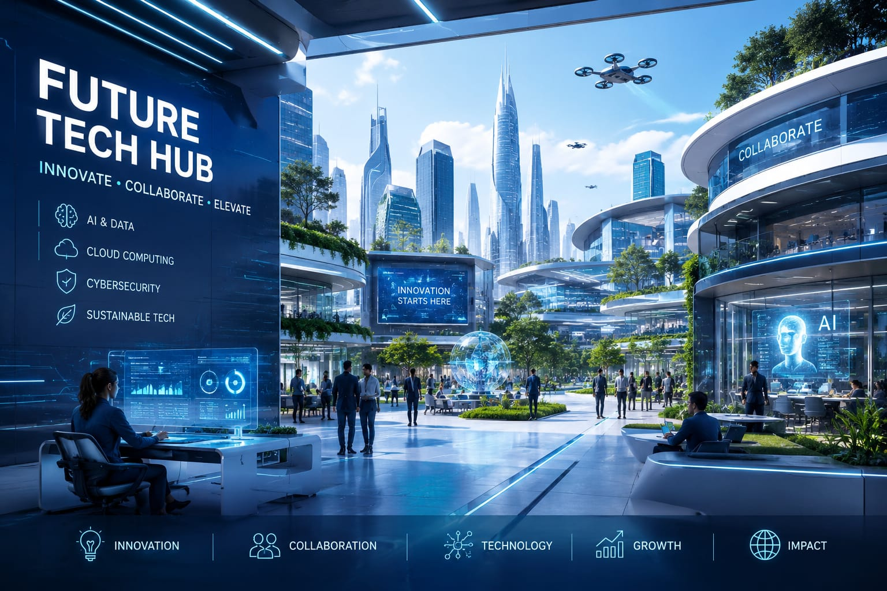

FutureTech Hub is a modern innovation platform designed to connect technology, creativity, and smart digital solutions in one powerful space. It represents the future of business transformation where ideas grow into intelligent products and services. From artificial intelligence and cloud computing to cybersecurity and web development, FutureTech Hub focuses on building technologies that improve everyday life and create new opportunities for businesses around the world. At FutureTech Hub, innovation is more than just a concept — it is a continuous journey of exploring advanced technologies and turning them into real-world solutions. The platform encourages creative thinking, teamwork, and digital excellence to help startups, developers, and enterprises achieve success in the fast-changing tech industry. With a strong focus on performance, design, and user experience, FutureTech Hub delivers smart and reliable solutions for the modern digital era. FutureTech Hub also believes in shaping the next generation of technology leaders by providing a collaborative environment where learning and innovation work together. Through modern tools, futuristic ideas, and cutting-edge development strategies, the hub creates impactful digital experiences that inspire growth and transformation. Whether it is developing smart applications, futuristic websites, or intelligent systems, FutureTech Hub stands as a symbol of progress, creativity, and technological advancement.FutureTech Hub is a dynamic technology platform focused on creating innovative digital solutions for the modern world. It combines creativity, intelligence, and advanced technology to help businesses grow faster and smarter in the digital era. From web development and artificial intelligence to cloud services and smart applications, FutureTech Hub delivers powerful solutions designed to improve performance, user experience, and business success. With a vision to shape the future through innovation, the platform encourages creativity, collaboration, and technological excellence to build a smarter and more connected world.
FutureTech Hub is a next-generation technology platform created to inspire innovation, accelerate digital transformation, and shape the future of smart businesses and modern technology solutions. It serves as a powerful center where creativity meets advanced technology, helping individuals, startups, and enterprises build intelligent systems that improve the way people live and work. With the rapid growth of artificial intelligence, cloud computing, automation, cybersecurity, and digital communication, FutureTech Hub focuses on delivering innovative solutions that are fast, secure, scalable, and future-ready. The platform is designed to support businesses in adapting to the constantly evolving digital world by providing cutting-edge technologies and smart development strategies that improve productivity, efficiency, and customer experience. At the core of FutureTech Hub is a strong commitment to innovation and technological excellence. The platform encourages creative thinking and modern problem-solving approaches to develop unique digital products and services. From interactive websites and mobile applications to AI-powered systems and smart automation tools, FutureTech Hub combines advanced technologies with user-friendly designs to create impactful digital experiences. The platform also emphasizes research and development, continuously exploring emerging technologies and future trends to stay ahead in the competitive tech industry. By integrating modern software solutions with intelligent systems, FutureTech Hub helps businesses transform traditional operations into smart digital ecosystems. FutureTech Hub also plays an important role in empowering the next generation of technology innovators and digital creators. It provides a collaborative environment where developers, designers, entrepreneurs, and technology enthusiasts can work together, share ideas, and build futuristic projects. Through innovation labs, smart workspaces, and advanced digital tools, the platform creates opportunities for learning, creativity, and professional growth. FutureTech Hub believes that technology should not only solve problems but also inspire progress and create new possibilities for the future. By focusing on sustainability, digital advancement, and intelligent innovation, the platform aims to build a smarter, safer, and more connected world for future generations. With a vision to become a global leader in technological innovation, FutureTech Hub continues to explore new possibilities in artificial intelligence, robotics, virtual reality, blockchain, data science, and next-generation communication systems. The platform is dedicated to delivering reliable, high-performance solutions that meet the needs of modern businesses and digital consumers. Its commitment to quality, security, and innovation makes FutureTech Hub a trusted destination for organizations looking to embrace the future of technology. Whether developing advanced software, creating digital experiences, or building intelligent infrastructures, FutureTech Hub stands as a symbol of progress, creativity, and the limitless potential of modern technology.
© 2026 FutureTech Hub. All Rights Reserved.